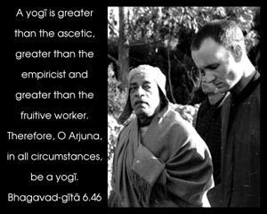
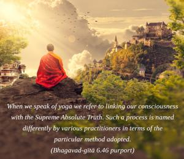
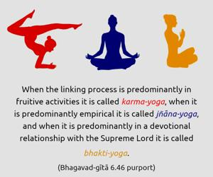

A yogī is greater than the ascetic, greater than the empiricist and greater than the fruitive worker. Therefore, O Arjuna, in all circumstances, be a yogī.



When we speak of yoga we refer to linking our consciousness with the Supreme Absolute Truth. Such a process is named differently by various practitioners in terms of the particular method adopted. When the linking process is predominantly in fruitive activities it is called karma-yoga, when it is predominantly empirical it is called jñāna-yoga, and when it is predominantly in a devotional relationship with the Supreme Lord it is called bhakti-yoga. Bhakti-yoga, or Kṛṣṇa consciousness, is the ultimate perfection of all yogas, as will be explained in the next verse. The Lord has confirmed herein the superiority of yoga, but He has not mentioned that it is better than bhakti-yoga. Bhakti-yoga is full spiritual knowledge, and therefore nothing can excel it. Asceticism without self-knowledge is imperfect. Empiric knowledge without surrender to the Supreme Lord is also imperfect. And fruitive work without Kṛṣṇa consciousness is a waste of time. Therefore, the most highly praised form of yoga performance mentioned here is bhakti-yoga, and this is still more clearly explained in the next verse.